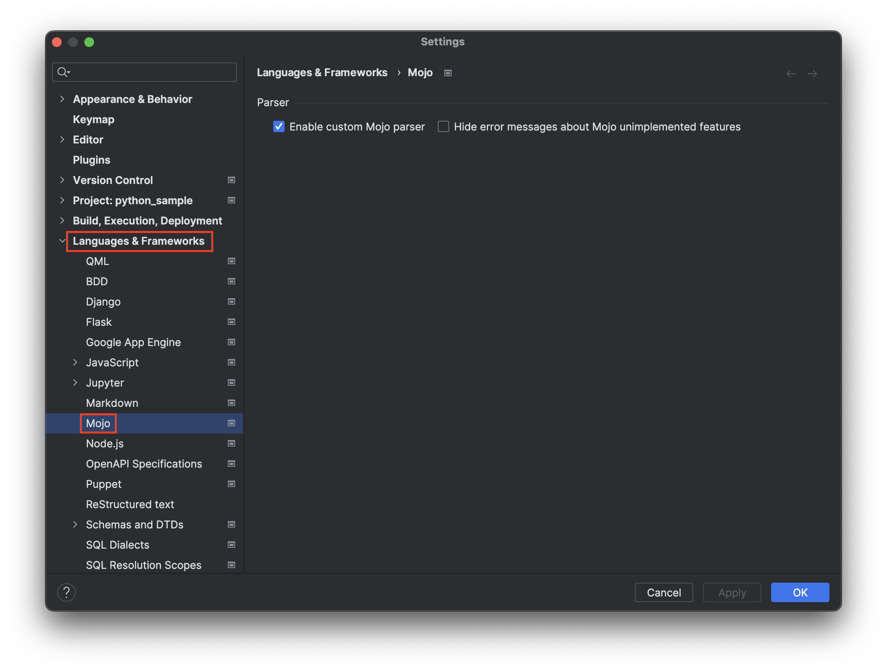
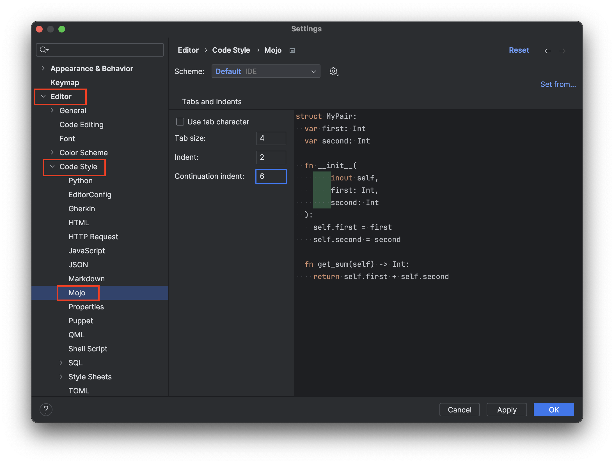

For formal feedback (bugs, feature requests, etc), please use Github issue tracker.
For the rest, feel free to reach out directly via Telegram @KirillShmakov or by email kishmakov@gmail.com.
Turn on syntax checking by allowing custom parser at → :
You can configure preferable tab size and indent at → → → :

If you encounter a problem, it make sense to turn on logging for Mojo plugin in Intellij log settings. It
can be done at
→
→
:
by specifiying com.kishmakov as a common prefix.
Please, reproduce the problem and share the log: → .